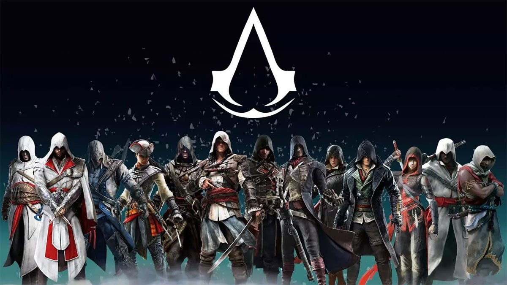
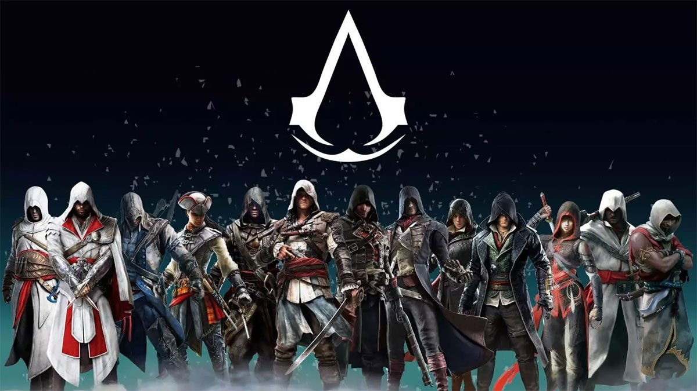

 Assassin's Creed is an open-world action-adventure stealth video game franchise published by Ubisoft and developed mainly by its studio Ubisoft Montreal using the game engine Anvil and its more advanced derivatives
 Assassin's Creed is an open-world action-adventure stealth video game franchise published by Ubisoft and developed mainly by its studio Ubisoft Montreal using the game engine Anvil and its more advanced derivatives
Ezio Auditore da Firenze (1459 - 1524) was a Florentine nobleman during the Renaissance, and, unbeknownst to most historians and philosophers, a Master Assassin and the Mentor of the Italian Brotherhood of Assassins, a title which he held from 1503 to 1513. He is also an ancestor of William and Desmond Miles, as well as Clay Kaczmarek.
Altaïr Ibn-La'Ahad was a member of the Levantine Brotherhood of Assassins who served as their Mentor from 1191 until his death in 1257. During his tenure as Mentor, through the knowledge of an Apple of Eden, Altaïr made several discoveries and inventions that greatly helped the Order's progression. His leadership saw to the spread of the Assassins' influence throughout the Old World
Kassandra ( 458 BCE ), also known as the Eagle Bearer, West Wind,[3] or Keeper,[4] was a Spartan mercenary who operated in Greece during the Peloponnesian War.